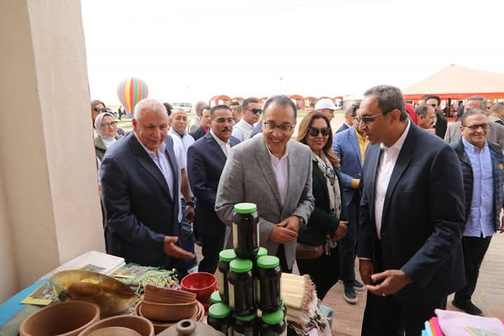
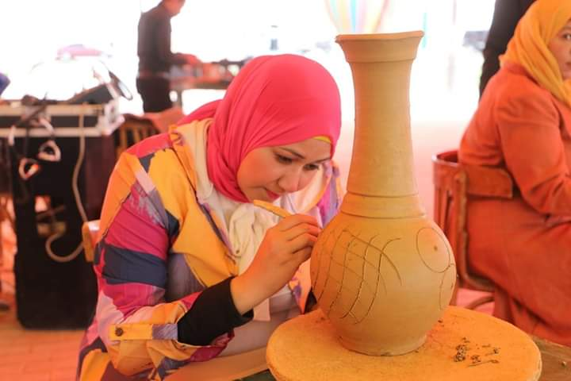
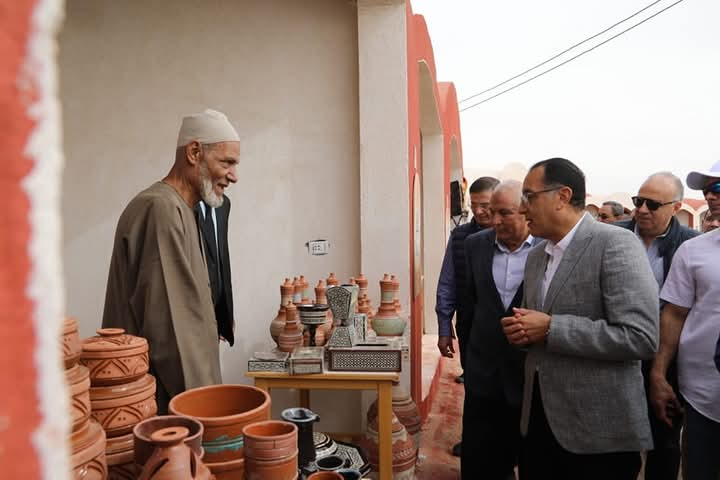

القرية التراثية في الوادي الجديد تمثل نقطة محورية على هامش فعاليات مهرجان الهجن، حيث قام الدكتور مصطفى مدبولي، رئيس مجلس الوزراء، بزيارة تفقدية للقرية التي تقع في مقر نادي الهجن شمال مدينة الخارجة. تضم القرية معرضًا متكاملاً يعرض مختلف الحرف اليدوية والتراثية التي تتميز بها المحافظة، بالإضافة إلى تمثيل معرض "أيادي مصر"، الذي يشارك فيه عارضون من مختلف محافظات الجمهورية. وخلال جولته في القرية التراثية، استمع رئيس الوزراء إلى شرح من اللواء دكتور محمد الزملوط، محافظ الوادي الجديد، حول مكونات القرية والأنشطة المتنوعة التي تقدمها. وتبلغ مساحة القرية أكثر من 18 ألف متر مربع، تضم 110 باكيات ومظلات ضيافة لعرض منتجات الحرف اليدوية والتراثية، مثل أعمال الخوص، الخزف، الرسم بالرمال، والحلي، بالإضافة إلى تمثيل مبادرة "أيادي مصر" لوزارة التنمية المحلية. القرية التراثية لا تقتصر على عرض الحرف اليدوية فقط، بل تعد منصة للابتكار والتسويق الإلكتروني لمشروعات الحرف اليدوية من خلال منصة "أيادي مصر"، التي أُطلقت بالتعاون مع برنامج الأغذية العالمي والشركة التنفيذية إي-أسواق مصر، بهدف تشجيع النساء والشباب على استخدام التكنولوجيا لتسويق منتجاتهم. وقد أشاد رئيس الوزراء بجودة وتنوع المنتجات المعروضة في المعرض، معبرًا عن تقديره الكبير لهذا النوع من المنتجات التي تعكس التراث المصري الأصيل وتُظهر قدرة الحرف اليدوية على المنافسة في الأسواق المحلية والدولية.
  